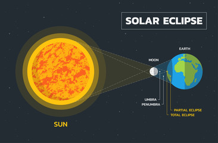
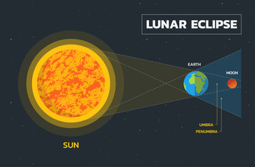

Solar Eclipses: Summary A solar eclipse occurs when the Moon passes between the Earth and the Sun, temporarily blocking the Sun's light either partially or completely. Understanding solar eclipses involves exploring their types, mechanics, historical significance, and scientific implications. 1. Types of Solar Eclipses Total Solar Eclipse: The Moon completely covers the Sun, visible from a narrow path on Earth. Totality can last from a few seconds to about 7 minutes. Partial Solar Eclipse: Only part of the Sun is obscured by the Moon, visible from a larger area within the penumbral shadow. Annular Solar Eclipse: The Moon is too far from Earth to cover the Sun completely, resulting in a "ring of fire" effect. 2. Mechanics of Solar Eclipses Orbits: The Earth orbits the Sun, while the Moon orbits the Earth, with the average distance between them being about 384,400 km. Shadow Cones: The Moon casts two shadows: Umbra: Darkest part for total eclipses. Penumbra: Lighter part for partial eclipses. Syzygy: The alignment of the Earth, Moon, and Sun during a new moon. 3. Historical Significance Different cultures have viewed solar eclipses as omens or religious events. Significant scientific advancements, like confirming Einstein's theory of general relativity during the 1919 eclipse, have been made. Eclipses have influenced historical events, often used by leaders to showcase power. 4. Scientific Implications Solar eclipses allow the study of the Sun’s corona and other solar activities. They provide opportunities to test astronomical theories. Eclipses engage the public and promote interest in astronomy. 5. Safety Precautions Eye Protection: Use special solar viewing glasses to prevent eye damage; regular sunglasses are insufficient. Pinhole Projector: A safe method to observe the eclipse without looking directly at the Sun.
A lunar eclipse occurs when the Earth comes between the Sun and the Moon, causing the Earth's shadow to fall on the Moon. This phenomenon can only happen during a full moon when the Sun, Earth, and Moon are aligned in a straight line or very close to it. Types of Lunar Eclipses Total Lunar Eclipse: The entire Moon passes through the Earth's umbra (the darkest part of its shadow). During this type of eclipse, the Moon can take on a reddish hue, often referred to as a "Blood Moon," due to Rayleigh scattering of sunlight through the Earth's atmosphere. Partial Lunar Eclipse: Only a part of the Moon passes through the Earth's umbra. In this case, a portion of the Moon will appear darkened, while the rest remains illuminated. Penumbral Lunar Eclipse: The Moon passes through the Earth's penumbra (the lighter part of the shadow). This type of eclipse is subtle and often hard to observe because the shading is very slight. Causes Alignment: A lunar eclipse requires a specific alignment of the Sun, Earth, and Moon. This alignment only occurs during a full moon. Shadows: The Earth casts two types of shadows: Umbra: The darker, central part of the shadow where direct sunlight is completely blocked. Penumbra: The lighter, outer part of the shadow where sunlight is partially blocked. Visibility Lunar eclipses can be observed from anywhere on the night side of the Earth. Unlike solar eclipses, which are only visible from specific areas, lunar eclipses can be seen by anyone who has a clear view of the Moon. Frequency Lunar eclipses occur 2 to 5 times a year, but not every full moon results in an eclipse because the Moon's orbit is tilted relative to Earth's orbit around the Sun. Cultural Significance Throughout history, lunar eclipses have held various cultural meanings. They have been seen as omens or events of great significance in many cultures, often influencing mythology and folklore.
Did you know?